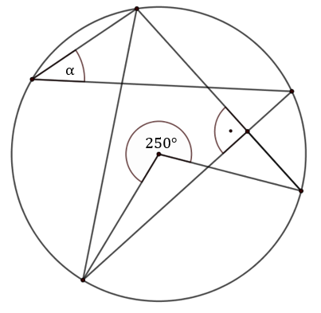
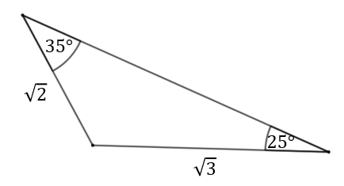
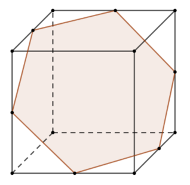
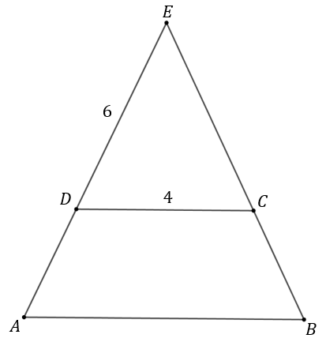

Matura 2020 kwiecień
Niech \(a=\frac{1}{2}\), \(b=9\), \(c=8\). Wartość wyrażenia \(b^a-\log_ac\) jest
równa
A.\( -3 \)
B.\( 0 \)
C.\( 3 \)
D.\( 6 \)
D
Liczba \(4^{610}\cdot 16^{200}\) jest równa:
A.\( 2^{810} \)
B.\( 2^{1010} \)
C.\( 2^{2020} \)
D.\( 2^{4040} \)
C
Wartość wyrażenia \(\sqrt[3]{\log_315-\frac{\log_3125}{\log_28}}\) jest równa
A.\( -1 \)
B.\( 1 \)
C.\( \log_23 \)
D.\( \log_35 \)
B
Wirus rozprzestrzenia się w tempie wykładniczym zwiększając liczbę zarażonych osób
dwukrotnie przez okres \(4\) dni. Jeżeli 3 kwietnia 2020 liczba zarażonych osób wyniosła \(100\), to
ile osób będzie zarażonych 27 kwietnia 2020 (zakładamy, że tempo rozprzestrzeniania się wirusa jest
niezmienne przez cały rozważany okres czasu)?
A.\( 6\cdot 10^2 \)
B.\( 2{,}4\cdot 10^3 \)
C.\( 6{,}4\cdot 10^3 \)
D.\( 100\cdot 2^{23} \)
C
Cena smartfona po obniżce o \(10\%\) była równa \(999\) zł. Przed obniżką ten
smartfon kosztował
A.\( 1100 \) zł
B.\( 1110 \) zł
C.\( 1111 \) zł
D.\( 1111,11 \) zł
B
Zbiorem wszystkich rozwiązań nierówności \(\frac{4x+12}{2}-\frac{17}{2}\gt -3x\)
jest przedział
A.\( \Biggl( \frac{1}{5}, +\infty \Biggl) \)
B.\( \Biggl( \frac{1}{2}, +\infty \Biggl) \)
C.\( \Biggl( -\infty ,\frac{1}{5} \Biggl) \)
D.\( \Biggl( -\infty ,\frac{1}{2} \Biggl) \)
B
Prosta \(k: y=(k^2-4)x+2\) jest prostopadła do prostej \(l: y=\frac{x}{2}-k^2\) dla
A.\( k=\sqrt{2} \) oraz \(k=-\sqrt{2}\)
B.\( k=2 \) oraz \(k=-2\)
C.\( k=\sqrt{2} \)
D.\( k=2 \)
A
Funkcja kwadratowa \(f(x)=ax^2+bx+c\) ma dwa miejsca zerowe \(x_1=-1\) oraz
\(x_2=3\). Ponadto \(a=2x_1-x_2\). Parabola będąca wykresem funkcji \(f\) ma wierzchołek w punkcie:
A.\( W=(-1, 5) \)
B.\( W=(1,5) \)
C.\( W=(1,20) \)
D.\( W=(1,-20) \)
C
Dany jest ciąg arytmetyczny \((a_n)\) dla którego suma pierwszych \(n\) wyrazów
wyraża się wzorem \(S_n=\frac{3}{2}n^2-\frac{11}{2}n\). Wówczas wartość wyrażenia
\(\frac{a_5+a_7}{2}\) jest równa
A.\( 11 \)
B.\( \frac{11}{2} \)
C.\( \frac{3}{2} \)
D.\( 3 \)
A
Układ równań \(\begin{cases} 2x-y-3=0 \\ -4x+2y-5=0 \end{cases} \)
A.nie ma rozwiązań.
B.ma dokładnie jedno rozwiązanie.
C.ma dokładnie dwa rozwiązania.
D.ma nieskończenie wiele rozwiązań.
A
Wysokość trójkąta równobocznego jest równa \(3\sqrt{3}\). Pole koła opisanego na
tym trójkącie jest równe
A.\( 2\pi\sqrt{3} \)
B.\( 4\pi\sqrt{3} \)
C.\( 6\pi \)
D.\( 12\pi \)
D
Na rysunku zaznaczono kąt środkowy okręgu o mierze \(250^\circ \) oraz kąt prosty
pod jakim przecinają się dwie cięciwy.  Zaznaczony kąt \(\alpha \) ma miarę
A.\( 30^\circ \)
B.\( 35^\circ \)
C.\( 40^\circ \)
D.\( 45^\circ \)
B
Ciąg geometryczny \((a_n)\) jest niemonotoniczny oraz \(\frac{a_{13}}{a_9}=64\).
Iloraz \(q\) tego ciągu jest równy
A.\( -\sqrt{2} \)
B.\( 2 \)
C.\( 2\sqrt{2} \)
D.\( -2\sqrt{2} \)
D
Kąt \(\alpha \) jest ostry i \(\cos \alpha =\sqrt{2}-1\). Wtedy wyrażenie
\(\frac{1}{|\sin^2 \alpha- 2\cos \alpha-1|}\) jest równe
A.\( -1 \)
B.\( 0 \)
C.\( 1 \)
D.\( \frac{\sqrt{2}}{2} \)
C
Pole trójkąta przedstawionego na rysunku wynosi 
A.\( \frac{3}{4}\sqrt{2} \)
B.\( \sqrt{6} \)
C.\( \frac{\sqrt{6}}{2} \)
D.\( \frac{\sqrt{6}}{4} \)
A
Dane są funkcje \(f(x) = \left(\frac{1}{2}\right)^x\) oraz \(g(x) = -f(-x)\),
określone dla wszystkich liczb rzeczywistych \(x\). Punkt wspólny wykresów funkcji \(f\) i \(g\)
A.nie istnieje
B.ma współrzędne \((1, 0)\).
C.ma współrzędne \((0, 1)\).
D.ma współrzędne \((0, 0)\).
A
Najmniejszą wartością funkcji \(f(x) = (1-x)(x-5)\) w przedziale \(\langle -1,
5\rangle\) jest
A.\( 6 \)
B.\( 0 \)
C.\( -6 \)
D.\( -12 \)
D
Okręgi o środkach \(S_1=(6,0)\) oraz \(S_2=(6,2)\) są styczne wewnętrznie. Promień
okręgu o środku \(S_1\) jest równy \(\frac{3}{2\sin 30^\circ }\). Największa możliwa różnica pól
tych okręgów jest równa
A.\( 4\pi \)
B.\( 8\pi \)
C.\( 16\pi \)
D.\( 24\pi \)
C
Sześcian o krawędzi długości \(\sqrt{2}\) przecięto płaszczyzną przechodzącą przez
środki boków, tak jak pokazano na rysunku. Pole otrzymanego przekroju jest równe 
A.\( \frac{3\sqrt{3}}{2} \)
B.\( \frac{6\sqrt{3}}{2} \)
C.\( \frac{\sqrt{3}}{4} \)
D.\( \frac{3\sqrt{3}}{4} \)
A
Suma liczby krawędzi i liczby wierzchołków ostrosłupa jest równa \(2020\). W
podstawie tego ostrosłupa jest wielokąt o
A.\(505\) krawędziach.
B.\(673\) krawędziach.
C.\(721\) krawędziach
D.\(1010\) krawędziach
B
Przekątna przekroju osiowego walca jest równa \(4\). Przekątna ta tworzy z bokiem
odpowiadającym wysokości kąt \(30^\circ \). Objętość walca wynosi
A.\( 2\sqrt{3}\pi \)
B.\( 3\sqrt{2}\pi \)
C.\( 8\sqrt{3}\pi \)
D.\( \frac{8\sqrt{3}\pi}{3} \)
A
Ile jest liczb czterocyfrowych, takich, że suma cyfr danej liczby jest nie większa
niż \(3\)?
A.\( 12 \)
B.\( 13 \)
C.\( 14 \)
D.\( 15 \)
D
W urnie znajduje się \(7\) kul czarnych, \(8\) kul białych i \(9\) kul zielonych.
Losujemy z urny \(3\) kule bez zwracania. Jakie jest prawdopodobieństwo, że wylosujemy trzy kule
różnych kolorów?
A.\( \frac{3}{7\cdot 8\cdot 9} \)
B.\( \frac{7\cdot 9}{11\cdot 23} \)
C.\( \frac{7\cdot 8\cdot 9}{24^3} \)
D.\( \frac{7\cdot 8\cdot 9}{22\cdot 23\cdot 24} \)
B
Jeżeli do zestawu trzech danych: \(3, 5, x\) dołączymy liczbę \(1\), to średnia
arytmetyczna zmniejszy się o \(2\). Zatem
A.\( x=-12 \)
B.\( x=11 \)
C.\( x=19 \)
D.\( x=29 \)
C
Liczba \(10\) jest przybliżeniem z nadmiarem liczby \(a\). Błąd bezwzględny tego
przybliżenia jest równy \(0{,}4\). Błąd względny tego przybliżenia, to
A.\( 4\% \)
B.\( 4{,}1(6)\% \)
C.\( 4{,}(4)\% \)
D.\( 40\% \)
B
Rozwiąż nierówność: \(x^2-4x+4\ge-1\).
\(x\in \mathbb{R} \)
Kąt \(\alpha \) jest ostry i spełniona jest równość \(\sin \alpha +\cos \alpha
=\sqrt{\sqrt{3}}\). Udowodnij, że istnieje liczba całkowita \(k\), taka, że \(\frac{\sin^2 \alpha
+\sin^2 (90^\circ +\alpha)}{\sin \alpha \cos \alpha} = k\sqrt{3}+k\).
\(k=1\)
Dany jest stożek, którego powierzchnia boczna jest \(2\) razy większa od pola jego
podstawy. Kąt rozwarcia tego stożka oznaczmy literką \(\alpha \). Wykaż, że suma miejsc zerowych
funkcji \(f(x)=(x - \operatorname{tg}^2 \alpha)(x-2) \) jest liczbą pierwszą.
Spośród dodatnich liczb trzycyfrowych losujemy kolejno bez zwracania trzy liczby.
Oblicz prawdopodobieństwo wylosowania trzech liczb nieparzystych.
\(\frac{112}{899}\)
Ramiona trapezu równoramiennego \(ABCD\) przedłużono i przecięły się w punkcie
\(E\) (patrz rysunek). Wiadomo, że \(|CD|=4, |DE|=6\) oraz \(|AB|=|CE|\). Oblicz pole trapezu
\(ABCD\). 
\(10\sqrt{2}\)
Ciąg \((a,b,c)\) jest geometryczny, a ciąg \(\left(a,\frac{c}{6},b-4\right)\) jest
arytmetyczny. Ponadto \(a+b+c=52\). Wyznacz \(a,b,c\). Znajdź wszystkie rozwiązania.
\(a=4, b=12, c=36\) lub \(a=64,b=-48,c=36\)
Prosta \(k\) przechodzi przez punkt \(P=(0,5)\) i jest prostopadła do prostej \(l:
y+x-3=0\). Prosta \(m: y=-\frac{1}{5}x+\frac{7}{5}\) przecina prostą \(k\) w punkcie \(A\), a prostą
\(l\) w punkcie \(B\). Proste \(k\) i \(l\) przecinają się w punkcie \(C\). Oblicz pole trójkąta
\(ABC\).
\(6\)
Adam, Bartek i Czarek mają za zadanie zgrabić liście z boiska. Adam sam wykonałby
całą pracę w \(6\) godzin, Bartek w \(8\) godzin, a Czarek w \(12\) godzin. Gdyby pracowali razem,
to wydajność każdego z nich byłaby o \(33,(3)\%\) większa. Ile czasu zajmie zgrabienie całego boiska
wszystkim trzem chłopakom, jeśli będą pracowali razem?
\(2\) godziny